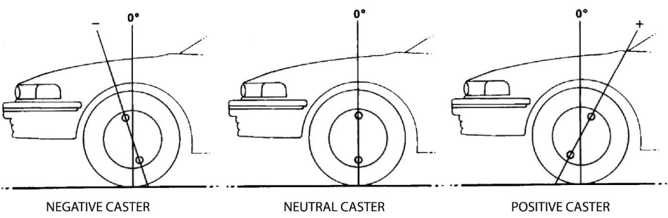
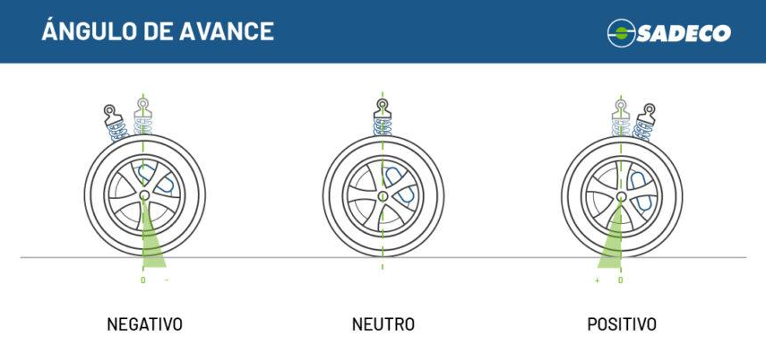

Avance o caster
El ángulo de avance o caster es uno de los parámetros principales de la geometría de dirección de un vehículo. Se refiere a la inclinación del eje de giro de la dirección respecto a una línea vertical, observándolo desde el lateral del automóvil.

Se considera avance positivo cuando la parte superior del eje de dirección se inclina hacia atrás respecto a la vertical.
Se considera avance negativo cuando la parte superior del eje se inclina hacia delante.
En la mayoría de los vehículos modernos se utiliza un caster positivo, ya que mejora notablemente la estabilidad y el control del vehículo durante la conducción.
Función del ángulo de avance
El caster tiene como función principal proporcionar estabilidad direccional. Gracias a este ángulo, las ruedas tienden a volver automáticamente a la posición recta después de realizar un giro, facilitando el control del volante y manteniendo el vehículo estable en línea recta.
Su funcionamiento es parecido al de las ruedas delanteras de un carrito de supermercado o una bicicleta: el punto de apoyo queda por delante del punto de contacto con el suelo, generando un efecto de autocentrado.
Efectos de un caster positivo
Cuando el avance positivo es correcto:
- El vehículo mantiene mejor la trayectoria recta.
- El volante regresa con suavidad al centro después de girar.
- Mejora la estabilidad a velocidades altas.
Se obtiene mayor precisión en la dirección. - Sin embargo, un caster excesivamente positivo puede hacer que la dirección se vuelva más dura o pesada.
Efectos de un caster negativo o incorrecto
Si el avance es negativo o existe un desajuste entre ambos lados:
- El vehículo puede perder estabilidad.
- La dirección se vuelve más sensible e inestable.
- El coche puede desviarse hacia un lado.
- El volante puede no regresar correctamente al centro.
Por ello, el ajuste del ángulo de avance es fundamental para garantizar seguridad, comodidad y un comportamiento estable del vehículo.
